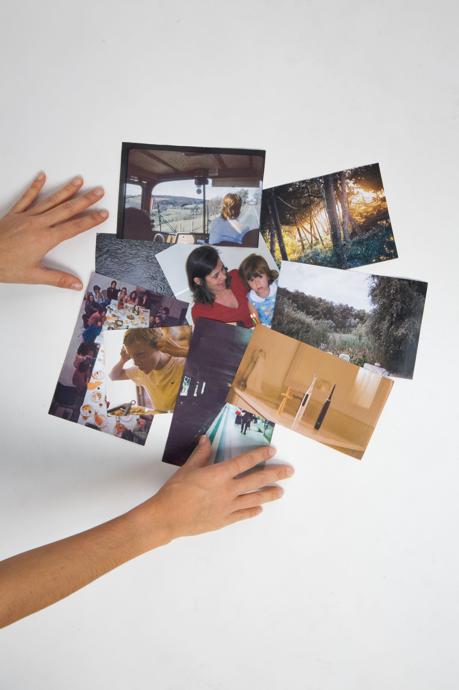
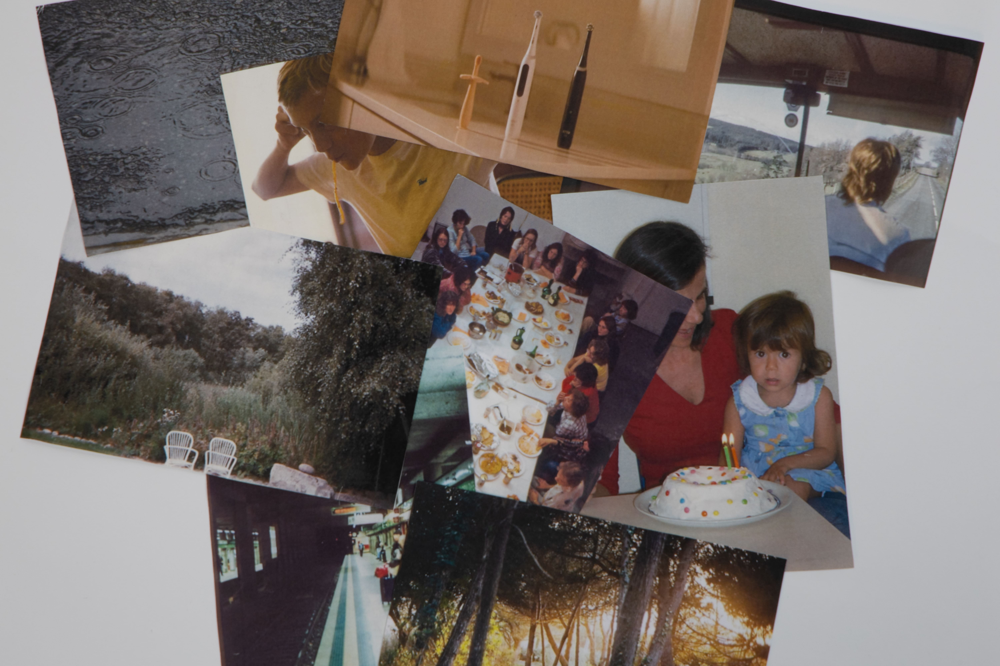
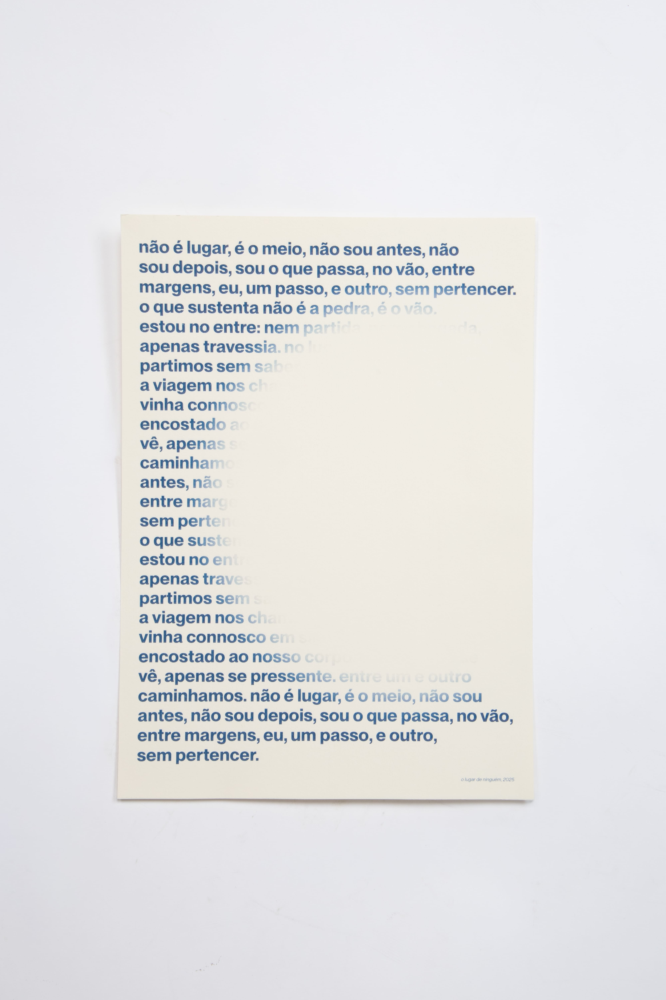
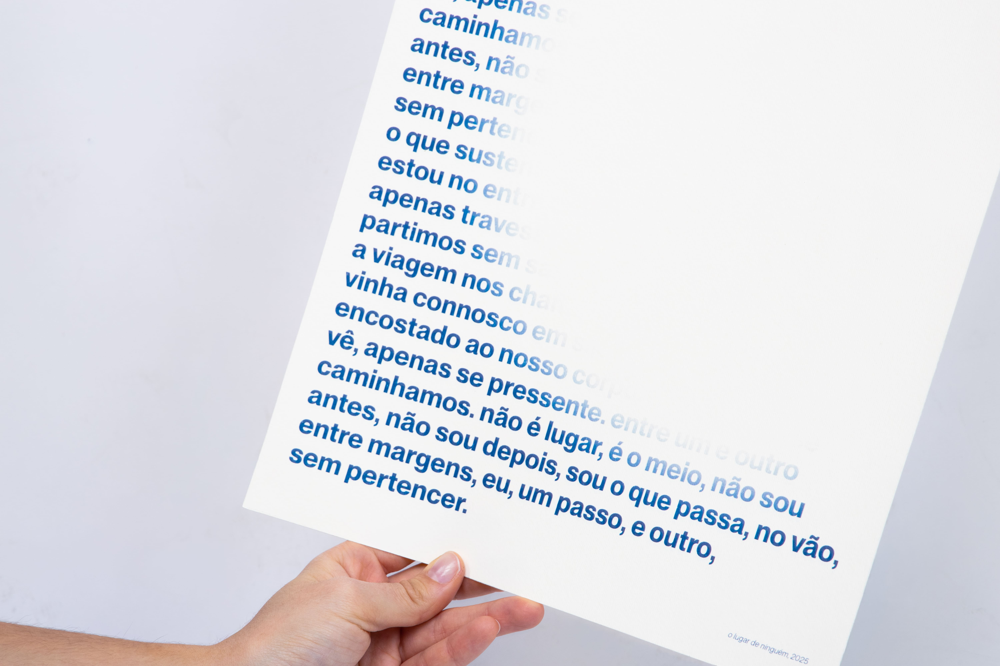
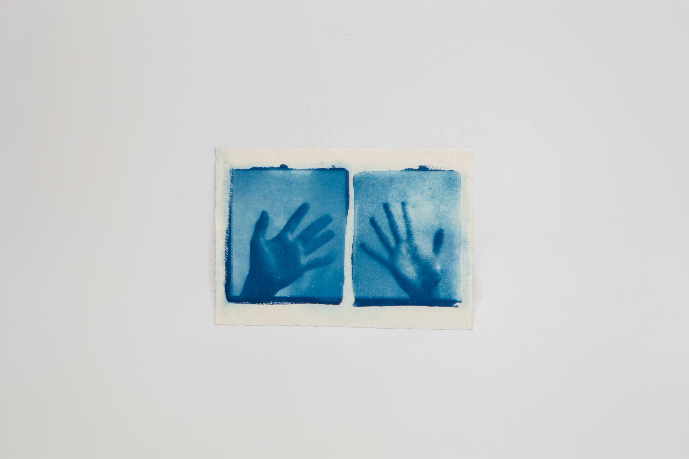
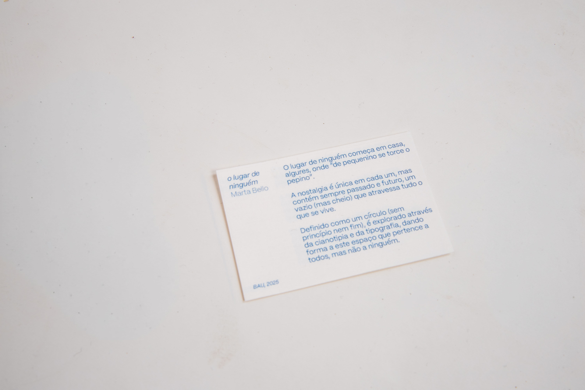
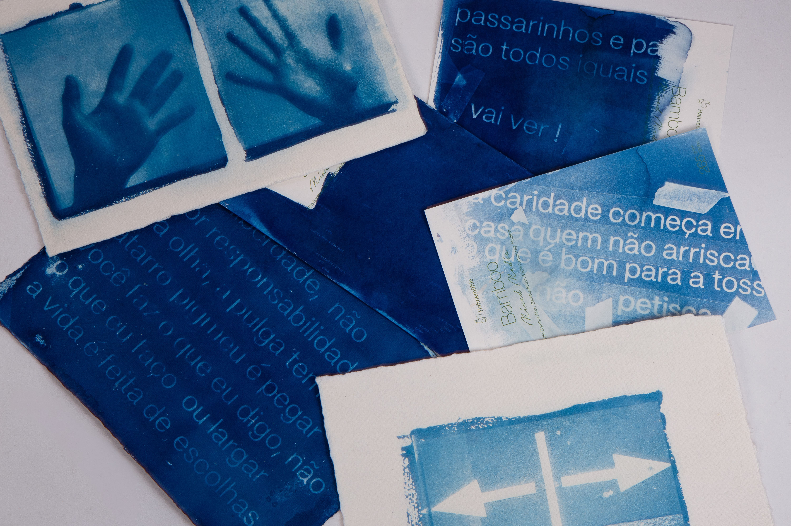

El lugar de nadie begins at home, somewhere between childhood sayings and the meanings they acquire later in life. Phrases like "de pequenino se torce o pepino" ("as the twig is bent, so grows the tree") or "passarinhos e pardais não são todos iguais" ("sparrows and little birds are not all equal") remained suspended in memory for years, only becoming understandable in adulthood. Revisiting them revealed a particular kind of nostalgia — not for a real place, but for one that never fully existed.
Nostalgia is unique to each person, yet it always carries both past and future: an emptiness (still full) that runs through lived experience. Defined as a circle, with no beginning or end, this "place of no one" exists between memory, absence, and belonging.
Through cyanotype, typography, and photography, the project constructs a visual narrative around this emotional territory, giving shape to a space that belongs to everyone and, at the same time, to no one.






